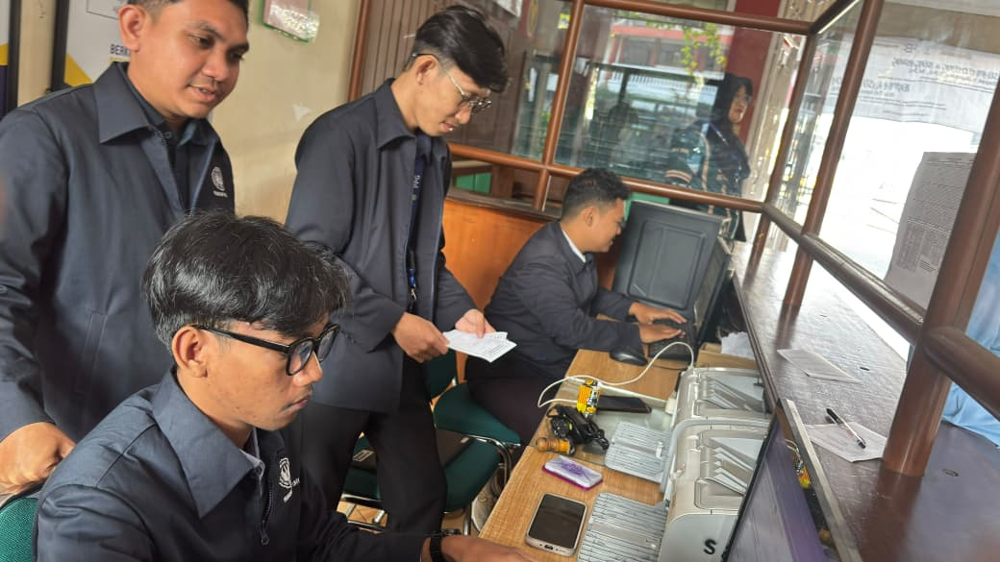

Piket Lobby: Layanan Tamu, Perizinan Siswa & Presensi Harian
Menjalankan tugas piket di meja resepsionis lobby utama SMA Negeri 4 Yogyakarta. Bertindak sebagai perwakilan resmi sekolah dalam menyambut tamu kedinasan dan orang tua/wali murid dengan budaya 5S (Senyum, Sapa, Salam, Sopan, Santun). Mengelola administrasi perizinan siswa yang meninggalkan lingkungan sekolah serta mencatat rekapitulasi presensi harian secara tertib dan disiplin.

- Pelayanan Tamu Prima: Resepsionis prima menyambut tamu dinas, wali murid, dan mitra sekolah dengan senyum, sapa, dan salam.
- Manajemen Perizinan Siswa: Verifikasi surat dispensasi kegiatan OSIS/ekskul dan pencatatan tertib izin keluar gerbang sekolah.
- Rekapitulasi Presensi Harian: Pencatatan absensi harian berkoordinasi langsung bersama guru piket kedisiplinan dan wali kelas.
Melayani tamu dinas, wali murid, dan mitra institusi dengan standar prima 5S di pos resepsionis sekolah.
Memverifikasi surat tugas, dispensasi organisasi kesiswaan, dan izin keluar gerbang sekolah secara tertib.
Merekap kehadiran harian siswa berkoordinasi bersama guru piket dan wali kelas untuk ketertiban jam KBM.